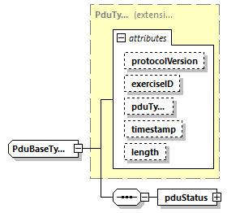

| diagram |  | ||||||||||||||||||||||||||||||||||||||||||||||
| type | extension of PduType | ||||||||||||||||||||||||||||||||||||||||||||||
| properties |
|
||||||||||||||||||||||||||||||||||||||||||||||
| children | pduStatus | ||||||||||||||||||||||||||||||||||||||||||||||
| used by | |||||||||||||||||||||||||||||||||||||||||||||||
| attributes |
|
||||||||||||||||||||||||||||||||||||||||||||||
| annotation |
|
||||||||||||||||||||||||||||||||||||||||||||||
| source | <xs:complexType name="PduBaseType" abstract="true"> <xs:annotation> <xs:appinfo>The superclass for all PDUs except LiveEntity. This incorporates the PduHeader record, section 7.2.2 </xs:appinfo> </xs:annotation> <xs:complexContent> <xs:extension base="PduType"> <xs:sequence> <xs:element name="pduStatus" type="PduStatusType"> <xs:annotation> <xs:appinfo>PDU Status Record. Described in 6.2.67. This field is not present in earlier DIS versions</xs:appinfo> </xs:annotation> </xs:element> </xs:sequence> </xs:extension> <!-- ========== debug: divider between elements and attributes ========== --> <!--xs:attribute padding is defined in subclasses for PduBase rather than here, in order to avoid inheritance collisions.--> </xs:complexContent> <!--abstract='true' base='PduType'--> </xs:complexType> |
element PduBaseType/pduStatus
| diagram |  |
||||||||||||||
| type | PduStatusType | ||||||||||||||
| properties |
|
||||||||||||||
| attributes |
|
||||||||||||||
| annotation |
|
||||||||||||||
| source | <xs:element name="pduStatus" type="PduStatusType"> <xs:annotation> <xs:appinfo>PDU Status Record. Described in 6.2.67. This field is not present in earlier DIS versions</xs:appinfo> </xs:annotation> </xs:element> |
XML Schema documentation generated by XMLSpy Schema Editor http://www.altova.com/xmlspy